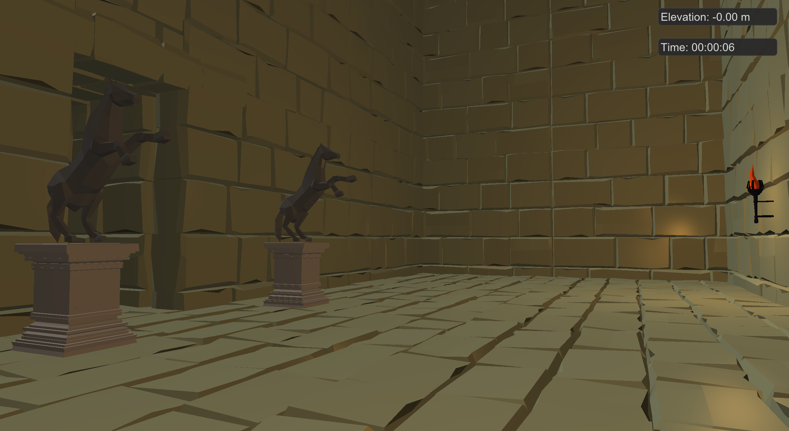
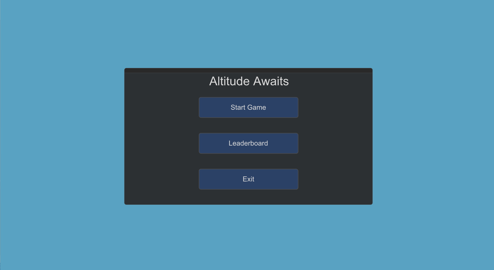

Altitude Awaits - Game Engine
PROJECT TYPE
University Project - C++, GLFW (OpenGL), ImGUI, Stb_image, GitHub
Description
A small demo game, "Altitude Awaits", used to demonstrate the game engine we developed throughout the semester. The game is similar to other platform games like only up where your goals is to make it to the top in to win, in this game you must make use of the jump platforms and dash mechanics to spring from one platform another and make your way up.
LAST UPDATED
2023
Development Team
- Zack Cornfield
- Thomas Stiles
- Jacob Mondi
- Milad Rakhshbahar
Project Planning and Tools
- Weekly meetings
- Trello
- Git with GitHub for source control
- GitHub Desktop
- Doxygen
Trailer
Features Developed by Me
Rendering and Texturing
The rendering and texturing system in "Altitude Awaits" was designed using the GLFW graphics library. With this I implemented custom texture classes and shaders that efficiently load and apply textures to objects.
Multiple Material Logic

"Altitude Awaits" supports multiple materials for a single entity, allowing for more intricate visual representations of objects. This feature is particularly useful for creating detailed models that require different textures or material properties, such as reflections and transparency, enhancing the overall realism.
OBJ Loading and Entity Class
Contributed to the development of the OBJ loading system, which imports 3D models from external files into the game. This feature supports a wide range of models, enabling easy asset integration. Additionally, worked on the Entity class to manage game objects effectively, providing a robust framework for placing and manipulating objects in the game world.
User Interface/Menu System using ImGui
Designed and implemented the UI using ImGui, a powerful and flexible immediate-mode GUI library. This allowed me to create a basic UI system for our game allowing the user to start/exit the game whilst keeping track of their highscore.
Basic Scene Manager
Built the foundation for a basic SceneManager, which handles switching between different scenes or levels in the game. This functionality is crucial for managing different environments, game states, and transitions, enabling a structured workflow for developers when expanding the game.